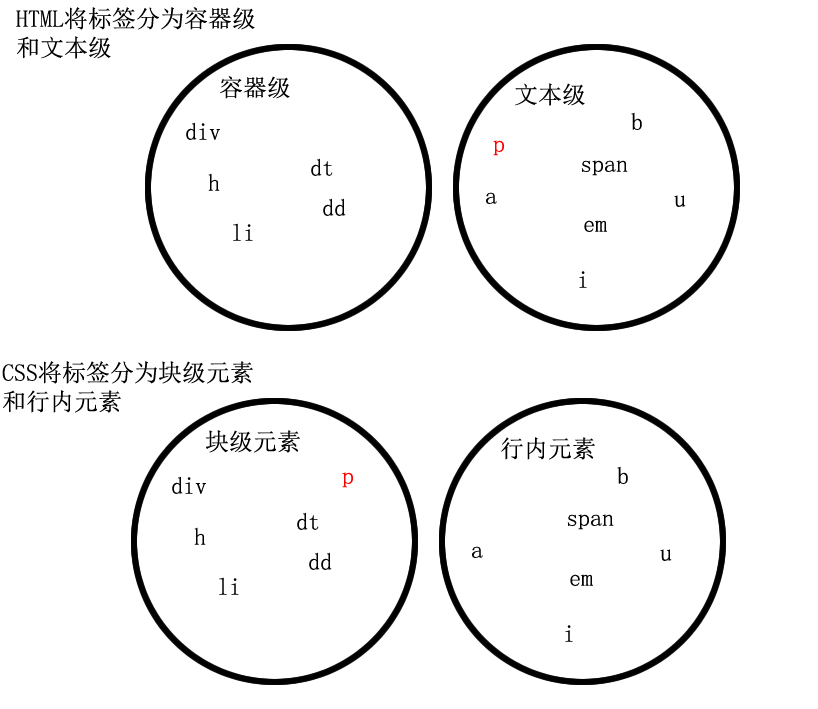

石婉茹
我的名字：石婉茹
QQ:2829339528
wechat:ww28052
敢问路在何方&&路在脚下
95后/本科在读/轻生活/轻梦想
石婉茹
我的名字：石婉茹
QQ:2829339528
wechat:ww28052
敢问路在何方&&路在脚下
95后/本科在读/轻生活/轻梦想
空白折叠现象
高矮不齐，底边对齐
自动换行，一行写不满，换行写 注意中文、英文、数字换行的区别 word-wrap属性
霸占一行，不能与其他任何元素并列
能接受宽、高
如果不设置宽高度，那么宽度将默认变为父亲的“100%”，高度默认为“0”。与标准文档流中，块级元素宽高度的计算有关
与其他行内元素并排
不能设置宽、高。默认的宽度，由内容撑宽
受父元素的text-align属性和自身vertical-align属性的控制，在水平方向上默认左对齐，垂直方向上默认在行框的baseline基线上显示
结合了块级元素和行内元素的特征
一行可以显示多个
可以设置尺寸属性（width、height等）
受父元素的text-align属性和自身的vertical-align控制
可变元素是基于块级元素与行内元素，随环境而变的。它的基本概念就是需要根据上下文关系确定钙元素是块元素或者行内元素。
可变元素还是属于上述两种元素类型，一旦上下文关系确定了它的类别，它就要遵循行内元素或者块级元素的规则
文本级：p、span、a、b、i、u、em
容器级：div、h系列、li、dt、dd
块级元素（默认）：div、h系列、li、dt、dd、p
行内元素（默认）：span、a、b、i、u、em
块级元素可以设置为行内元素 行内元素可以设置为块级元素
一旦，给一个标签设置display: inline;那么，这个标签将立即变为行内元素。此时它和一个span无异
此时这个标签不能设置宽度、高度；可以和别人并排了
一旦，给一个标签设置display: block;那么，这个标签，变得和一个div无异
此时这个标签能够设置宽度、高度；霸占一行了，别人无法和他并排；如果不设置宽度，将撑满父亲
替换元素就是根据浏览器的标签和属性，来决定元素具体的展示内容
例如img input textarea select object，这些元素往往没有实际的内容，是一个空元素
大多数元素是不可替换元素，即其内容直接表现给用户端（例如浏览器）
子元素的虚拟矩形区域，形成的每一行
当行内元素或者行内块级元素并排排列的时候，可能它们的高度、字体大小不一样。那么行框就是包裹它们的一个框。
行框规定了这些元素排列时候的对齐方式。默认它们的对齐方式是根据baseline基准线对齐
在行框中，利用vertical-align来改变它们的对齐方式，常用的值有top、middle、bottom等
浮动
绝对定位
固定定位